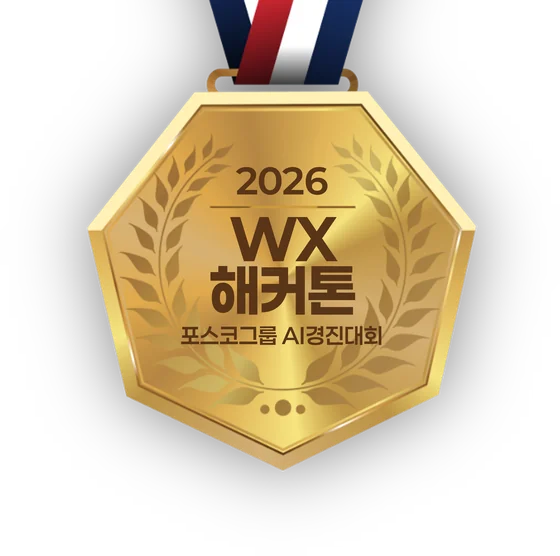

2026 WX해커톤
팀밋업
Master Track Team Meet-up
End-to-End:
휴대폰으로 찍으면
내 자리에서 함께 봅니다
hackathon.wx.ai.kr
2026 WX해커톤
Master Track Team Meet-up
휴대폰으로 찍으면
내 자리에서 함께 봅니다
hackathon.wx.ai.kr

자발적 팀 주도의 현업 과제 발굴
AI 에이전트(바이브코딩) 기반 워크플로우 재설계
그룹 공통 비즈니스 과제에 전문가 팀을 구성해 실질적 비즈니스 임팩트 창출
Top-down 과제 선정
참가자 모집 → 3팀 구성
전문가 밀착 코칭
솔루션 집중 개발
본선 참가
공동마무리
기술적 난이도와 무관하게, 솔루션의 비즈니스 임팩트에 대한 평가
기술적 난이도, 기능구현의 완성도, 솔루션의 실제 기간시스템 접목 가능성 등에 대한 평가
Enter · 휠 · → 다음 · F 전체화면 · P 진행자 노트